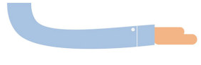

于 浩
13488784342
13488784342@163.com
基本信息
姓名
性别
民族
年龄
学历
专业
院校
于浩
男
汉族
27
专科
人力资源
北京汇佳职业学院
华北电力大学（成考本科）
计算机科学与技术
工作经历
2010/8 - 2012/10
北京利德华福电气技术有限公司
高压测试及售后服务
求职信息
目标职位
期望薪资
到岗时间
前端开发工程师
xxx
一周内
掌握技能
HTML5、CSS3、JavaScript
熟悉W3C标准与ES规范，熟悉Web语义化
盒模型、常用布局以及浏览器和移动设备兼容性
jquery angular react Bootstrap
Ajax
Nodejs
gulp webpack